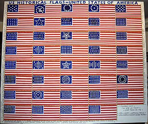

The first American flag only displayed 13 stripes as well as 13 stars that were arranged in a circle. The stars and stripes represented the 13 colonies that declared independence from Great Britain. While the origins of the first American Flag are unknown, some do believe that is was designed by a New Jersey Congressman, Francis Hopkinson, and sewn by a Philadelphia seamstress, Betsy Ross. Since the founding of the United States, there have been 27 versions of the American flag. Each new flag represented the addition of new states.
